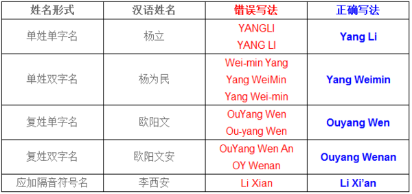

关于姓名拼音、政治面貌等学生学籍信息修改维护流程
(备注：所有申请请认真填报，确保信息无误，切勿重复提交！)
为保证教务管理信息系统中学籍信息的准确性，请在校生按要求在教务系统中申请学籍信息修改（如姓名拼音、政治面貌、曾用名、籍贯、血型等）。
系统提示：关于浏览器兼容的解决办法，如果是win7或者IE浏览器版本超过IE8，请进入教务系统后按F12，浏览器模式选择IE8。更多兼容性设置办法，请查看网页：
http://jwc.upc.edu.cn/s/19/t/140/5d/00/info89344.htm
学生学籍信息不及时维护的后果
如果学籍信息中相关信息不及时维护，你可能会遇到：学生成绩单打印信息错误、在读证明打印信息错误、四六级考试报名信息错误等，特别是通过南教自助教学服务系统自行打印的成绩单、在读证明等。
学生学籍信息维护项目
- 学生可自行申请修改的学籍信息包含：姓名拼音（具体格式可见附2）、政治面貌、籍贯、婚姻状况、邮政编码、电话、血型、通讯地址、电子信箱、曾用名、火车到站等11项。
- 学生姓名、性别、出生日期、身份证号（即证件号）、民族等5项为关键字段，学生不可在线申请修改；如果需要或疑问，请直接联系学籍管理科，电话：0532-86981303。
学生学籍信息维护流程(信息维护时间：一般为每学期开学初前4周)
- 登录系统，点击“学籍信息”，选择“学籍信息管理”。
- 点击左上角“增加”。
- 进入“信息修改”页面后，对需要维护的信息进行维护即可，修改完毕后请点击“保存”即可提交修改信息。
- 提交修改信息后，请及时告知学生所在学院教学办老师，申请通过修改信息审核。
请同学们在规定时间内完成申请，否则产生课表，选课，注册错误等问题，由学生自己承担。
附1：图文版申请流程示意图，请点击查看：
学生信息维护、学籍异动申请流程示意图
附2：根据《中国人名汉语拼音字母拼写规则》的规定，姓名的汉语拼音方法及规范化书写格式主要需要注意以下6点：
- 汉语姓名的拼音法必须以普通话(不能用方言)为准；
- 汉语姓名必须将姓和名分写，并且姓在前名在后；
- 姓和名中的第一个字母必须大写，其余的字母一律小写、连写；复姓或双字名，字间既不空格也不用半字连接线；
- 一般情况下姓和名均不加调号；
- 应按《汉语拼音方案》规定，必要时用隔音符号(’)；
- 汉语姓名中的姓和名均无缩略形式，也就是说凡缩写都是错误的。现举例说明。
